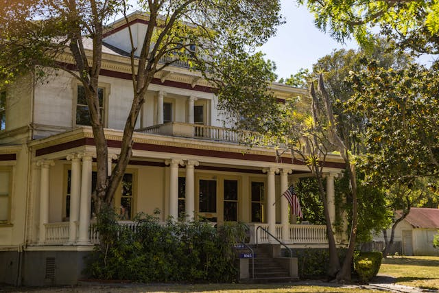

Preserving the History of Blue Springs
The Blue Springs Historical Society is dedicated to protecting, preserving, and sharing the rich history of our community. From historic homes to treasured artifacts, we work to ensure that future generations can experience the stories that shaped Blue Springs.
Learn More
Explore Our Historic Sites
The Society maintains several important landmarks that reflect the early development of Blue Springs. Each site offers a unique glimpse into the lives of the families and individuals who helped build our community.
- Dillingham‑Lewis House Museum – A beautifully preserved 1906 home filled with period furnishings and local artifacts.
- Chicago & Alton Hotel – One of the oldest surviving structures in Blue Springs, once serving travelers along the railroad.
- Blue Springs Train Depot – A restored depot representing the importance of rail travel in the city’s early growth.
Adopt‑A‑Window Program
Help preserve the historic Chicago & Alton Hotel by sponsoring the restoration of one of its original windows. Your contribution directly supports ongoing preservation efforts and ensures that this landmark remains a part of our community’s story.
Get InvolvedSupport Our Mission
As a nonprofit organization, we rely on the generosity of our members, donors, and volunteers. Whether you choose to donate, volunteer, or become a member, your support helps us preserve the history of Blue Springs for generations to come.
Become a Member